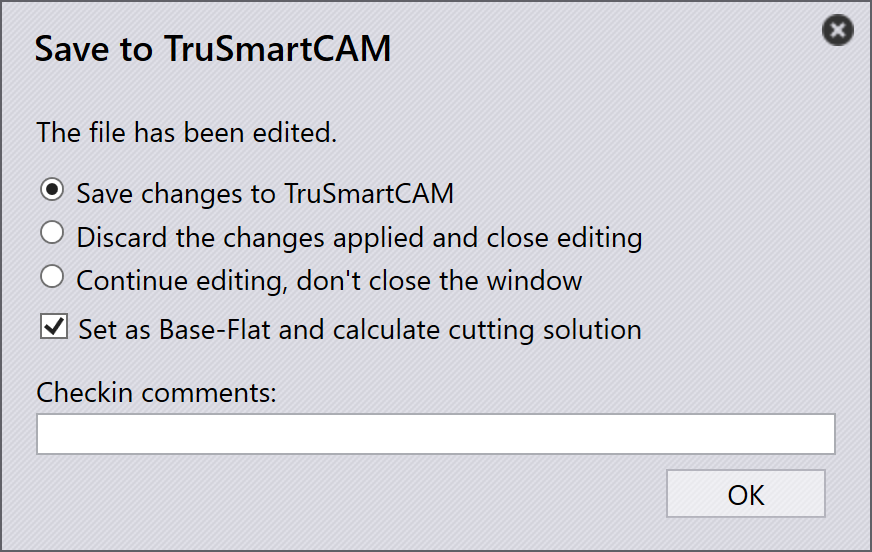

Pannello attrezzaggio
Questa sezione illustra le azioni relative all’attrezzaggio come Export outputs, Check Tooling, Suppress Tooling, Set as Base-Flat…, Copy Tooling e altre opzioni utilizzate per gestire le istanze di attrezzaggio.

|
|
Export Outputs
Questa opzione esporta l’output del componente nella destinazione configurata in Factory Settings. (Vedere Bend Settings e Cut Settings)
Vengono esportati solo gli attrezzaggi associati all’operazione di attrezzaggio selezionata, non l’intero componente.
| I file esportati dipendono dal tipo di operazione. Per le operazioni di Bend e Fold, vengono generati file NC e report. Per le operazioni di Cut e Punch, vengono esportati solo i file del componente. |
Check Tooling
-
Se c’è una modifica nelle impostazioni CAM o un utensile di piegatura viene perso, non è necessario riattrezzare il componente.
-
Utilizzare invece Check Tooling per convalidare l’attrezzaggio esistente senza apportare modifiche.
-
Se la validazione ha esito negativo, lo stato di attrezzaggio di quell’istanza viene aggiornato e i file di output correlati vengono rimossi.
-
Check Tooling rileva anche i componenti in cui gli errori sono stati precedentemente ignorati manualmente utilizzando Ignore Errors, e ne aggiorna lo stato a errore se necessario.
Copy tooling
La copia dell’attrezzaggio consente di applicare rapidamente l’attrezzaggio di piegatura da una soluzione ad altre, risparmiando tempo e fatica.
Questa operazione copia la configurazione di punzone, sequenza e battuta posteriore da un attrezzaggio (soluzione) di riferimento selezionato e prova ad applicare le stesse impostazioni a tutte le altre soluzioni.
-
Se la configurazione copiata è fattibile per una macchina di destinazione, viene salvata e utilizzata.
-
Se la configurazione non è fattibile, l’attrezzaggio originale per quella macchina rimane invariato.
Ad esempio, è possibile avere attrezzaggi diversi per macchine diverse:
-
Qui, la Macchina 5230X 4A utilizza un punzone Gooseneck, la Macchina 5230SX 6A utilizza un punzone Pointed.

Quando si utilizza Copy Tooling… sulla Macchina 5230X 4A, il sistema prova a copiare la configurazione Gooseneck su tutte le altre macchine.

Le stesse impostazioni di punzone, sequenza e battuta posteriore vengono applicate ovunque sia possibile. Se la configurazione copiata non può essere utilizzata, l’attrezzaggio originale rimane invariato.

Dopo aver applicato la copia dell’attrezzaggio, la configurazione Gooseneck è stata applicata correttamente a tutte le altre macchine in cui è fattibile.
Set as Base-Flat…
La funzione Set as Base-Flat… definisce quale attrezzaggio di piegatura o pannellatura viene utilizzato come dimensione piatta di riferimento per la generazione delle soluzioni di taglio. Quando un attrezzaggio viene contrassegnato come Base-Flat, TruSmartCAM aggiorna la dimensione piatta del componente in base a quella macchina e rigenera le soluzioni di taglio di conseguenza. Gli attrezzaggi Base-Flat vengono mostrati con un bordo blu nell’interfaccia utente.
Macchine di piegatura diverse possono produrre lievi variazioni nella dimensione piatta per lo stesso componente. Quando si imposta un attrezzaggio come Base-Flat, TruSmartCAM utilizza la dimensione piatta di quella macchina come riferimento principale e ricalcola automaticamente le soluzioni di taglio.
Qui possiamo vedere dimensioni piatte diverse per lo stesso componente su varie macchine:

In questo esempio, l’attrezzaggio 5230X 4A è impostato come Base-Flat, e la dimensione piatta aggiornata viene applicata nelle proprietà del componente:

Selezione automatica della base flat
Quando l’impostazione di fabbrica Apply flat correction during bending è abilitata:

-
TruSmartCAM imposta automaticamente l’attrezzaggio di piegatura (che contiene la tabella della lunghezza massima di piega) come Base-Flat durante l’importazione del componente.
-
Se l’attrezzaggio di piegatura selezionato incontra un errore o non è fattibile, TruSmartCAM passa in modo intelligente e imposta un altro attrezzaggio di piegatura valido come Base-Flat. Ciò garantisce che il riferimento della dimensione piatta e le soluzioni di taglio rimangano sempre coerenti e validi senza intervento manuale.
Gestione avanzata della base flat
TruSmartCAM fornisce le opzioni Base-Flat nella finestra di dialogo Save to Praxis quando si salvano le modifiche all’attrezzaggio di piegatura o pannellatura. Queste opzioni appaiono solo per gli attrezzaggi nello stato OK e garantiscono che la dimensione piatta e le soluzioni di taglio rimangano accurate.
Set as Base-Flat and calculate cutting solution
Questa opzione viene utilizzata per contrassegnare un attrezzaggio come Base-Flat per la prima volta e generare automaticamente la corrispondente soluzione di taglio.
Appare quando:
-
L’attrezzaggio non è attualmente contrassegnato come Base-Flat.
-
L’utente ha effettuato il check-out dell’attrezzaggio per la modifica e sta salvando le modifiche.

Per utilizzare questa opzione, effettuare il check-out dell’attrezzaggio di piegatura o pannellatura e apportare le modifiche richieste, come le modifiche ai parametri di piega o alla dimensione piatta. Premere Ctrl+S per salvare le modifiche. Nella finestra di dialogo Save to Praxis, scegliere Set as Base-Flat and calculate cutting solution e fare clic su OK. TruSmartCAM imposterà l’attrezzaggio come Base-Flat e genererà la soluzione di taglio utilizzando la dimensione piatta aggiornata.
Update the base-flat and re-calculate cutting solution
Questa opzione viene utilizzata quando l’attrezzaggio è già contrassegnato come Base-Flat ed è stato modificato, richiedendo la rigenerazione della dimensione piatta e delle soluzioni di taglio.
Appare quando:
-
L’attrezzaggio è già contrassegnato come Base-Flat.
-
L’utente ne ha effettuato il check-out, lo ha modificato e sta salvando le modifiche.

Durante la modifica dell’attrezzaggio Base-Flat esistente, aggiornare i parametri di piega o la geometria della dimensione piatta secondo necessità. Nella finestra di dialogo Save to Praxis, scegliere Update the base-flat and re-calculate cutting solution. TruSmartCAM aggiornerà quindi l’attrezzaggio Base-Flat e rigenererà tutte le soluzioni di taglio correlate per riflettere le ultime modifiche.
|
È possibile impostare come Base-Flat un solo attrezzaggio di piegatura alla volta. Quando la Base-Flat viene modificata, le soluzioni di taglio esistenti vengono rielaborate automaticamente. Questa funzione è disponibile sia per gli attrezzaggi di piegatura che di pannellatura all’interno di TruSmartCAM. |
Re-tool
Questa opzione rielabora l’attrezzaggio selezionato per il componente.
Fare clic con il pulsante destro del mouse sull’attrezzaggio richiesto nel Pannello attrezzaggio e fare clic su Re-tool…
Viene visualizzata una finestra di dialogo di conferma prima di procedere.

Fare clic su Yes per continuare con il riattrezzaggio, oppure No per annullare l’operazione.
Viene riattrezzato solo l’attrezzaggio selezionato. Gli altri attrezzaggi associati al componente non vengono interessati. Gli output esistenti relativi all’attrezzaggio selezionato vengono rimossi e rigenerati durante il processo di riattrezzaggio.
Utilizzare questa opzione quando i dati di attrezzaggio sono obsoleti, non corretti o quando vengono apportate modifiche alle configurazioni della macchina o dell’attrezzaggio.
Ignore errors
-
Se un’istanza attrezzata mostra un’avvertenza e si desidera comunque procedere, è possibile ignorare l’avvertenza facendo clic su Ignore errors.
-
Ciò consentirà al sistema di esportare i file di output per quell’istanza, anche se erano presenti problemi di attrezzaggio.
| Utilizzare Ignore Errors solo quando si è certi che l’avvertenza possa essere ignorata in sicurezza. Ignorare errori effettivi può causare danni alla macchina o rischi per la sicurezza. |
Suppress/Unsuppress tooling
-
Quando una macchina è inattiva o non si desidera che un componente specifico venga elaborato da una particolare macchina, utilizzare Suppress Tooling per escludere quel componente dal nesting su quella macchina.
-
Dopo la soppressione, passando il mouse sull’istanza attrezzata viene mostrato un messaggio come: “Tooling suppressed by <User name> on <Date Time>”.
-
La soppressione dell’attrezzaggio rimuove il file di output per quella macchina e quel componente.
-
Utilizzare Unsuppress tooling per ripristinare lo stato di attrezzaggio per il componente su quella macchina.
-
Quando la soppressione viene annullata, il rispettivo file di output viene generato di nuovo.